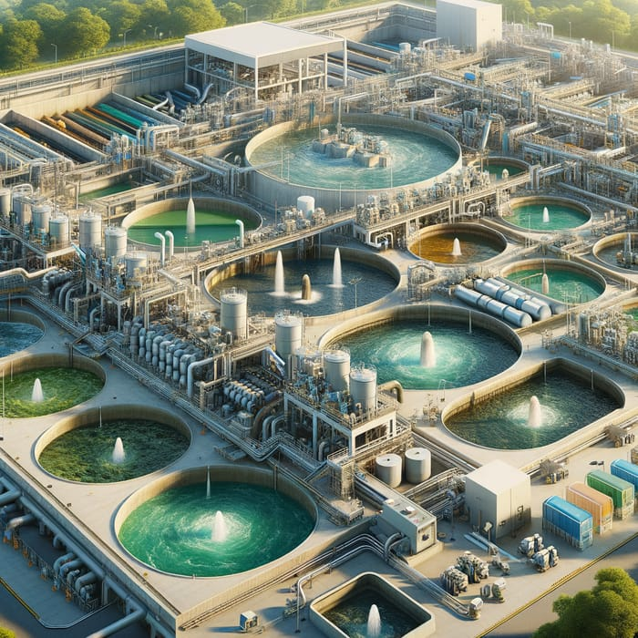

L'IA dans le Traitement et la Réduction de la Pollution
Surveillance et Analyse de la Qualité
Capteurs intelligents et analyse de données en temps réel pour détecter les contaminants.
Détection précoce des anomalies et alertes automatiques.
Optimisation des Processus de Traitement
Stations d'épuration intelligentes avec ajustement automatique des dosages chimiques.
Réduction des boues et valorisation des sous-produits du traitement.
Optimisation énergétique des processus de traitement.
